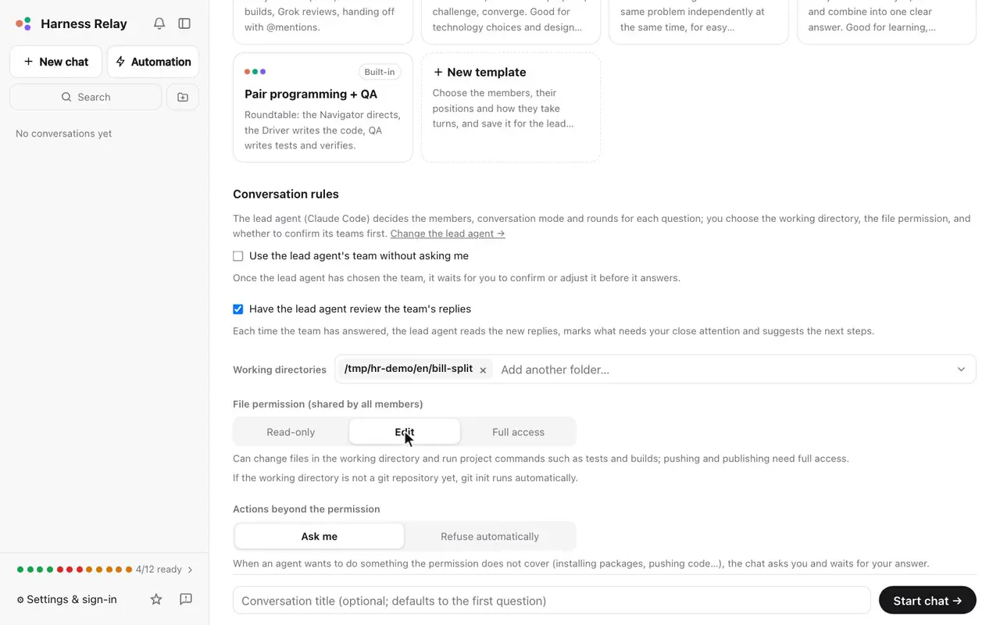
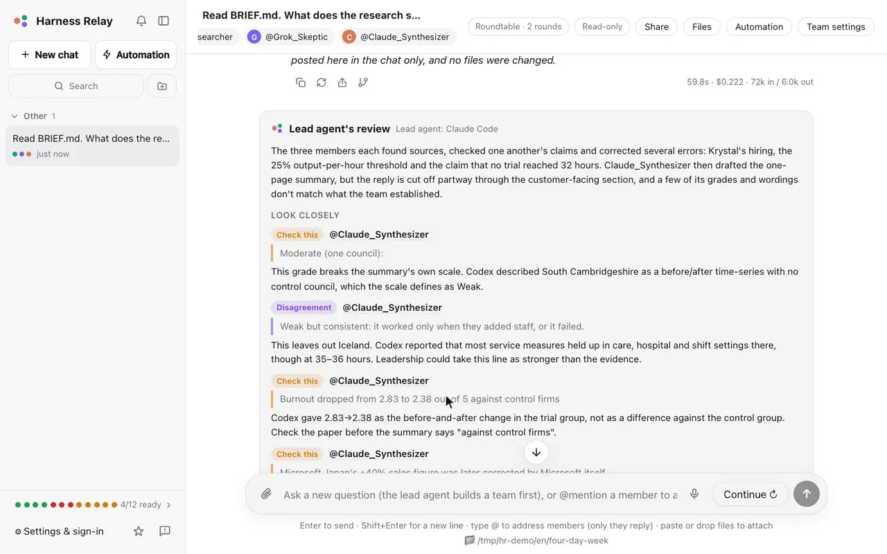

Your first chat
Start a chat, ask your question and confirm the team: the agents answer in the same chat, and you can join in at any time. This page walks through one question from start to finish.
Start a new chat
Watch a complete chat (MP4) to see how the lead agent picks a team for your question and handles a follow-up.
Choose Start a new chat on the home page or New chat in the sidebar. Type your first question. Open Workspace and chat settings to change folders, permissions or the title. If you visit lead settings, Return to new chat draft brings you back to the question and choices in this window.
- Working directories: the folder the agents work in. Type a path and press Enter, pick one you used before from the list, or, in a browser on the computer that runs Harness Relay, use the folder button to choose it in your system's own dialog. You can add up to eight; the agents start in the first. If a folder does not exist yet, Harness Relay asks whether to create it.
- File permission: what every agent may do without asking you: Read-only, Edit or Full access. If you are not sure, start with read-only. What each level allows
- Actions beyond the permission: Ask me (the chat asks you, and the agent waits) or Refuse automatically (the agent is told no, and tries another way).
- Under Once the team is ready, choose Wait for my confirmation or Start answering right away. The next chat remembers your choice.
- Have the lead agent review the team's replies sits below the team confirmation options and starts checked. Once the team has answered, the lead agent reads the replies and points out what to check (see below).
Type or dictate your question to enable Send question. You can send files with your question for the team. The send button stays at the bottom of the form card. Use the down arrow to see more settings.

Ask your question
To try a file in your first chat, open Settings → Apps and tools. On the Common apps tab, find Google Drive under Documents and notes, select Connect and choose Claude or Codex. After authorizing Drive, start a new chat with that assistant and ask it to find a document by name. To write a Google Doc, open Create or edit Google Docs in Relay in the Drive row and enable document editing for your Google account. Ask your chosen assistant to draft a document. Review the account, title and text before selecting Create document or Discard. Set up Google Docs editing
For Slack, open Team messaging → Slack, follow the connection link for Claude or Codex and return to see the status for that account. Drive and Teams offer the same separate connections. The optional Send from Relay setup lets the assistants you select propose a post for your approval. Connect Slack
Under Mail and calendar, open Mail and select Gmail, Outlook, iCloud Mail or Other mailbox under Choose your mail service. To connect a calendar, open Calendar. Under Choose your calendar service, select iCloud Calendar, Google Calendar, Outlook or Other (CalDAV) to see the setup for your service. Use Choose assistants to enable this tool within either row to choose an assistant.
To try a local note, open Obsidian → Choose vault in Common apps. Use Add vaults for additional vaults. Assistants you enable can use every connected vault. Ask one to turn a decision from the chat into a Markdown note in a named vault. Review the vault’s full path, the note path and the proposed text, then select Create note or Discard.
To ask about a pull request, connect GitHub under Development and browsing in Common apps. The same GitHub CLI account handles chat sharing and GitHub automations. Manage or sign out of that account
Write your question as you would to a colleague: what you need, what you have tried, and what a good answer looks like. Enter sends it, and Shift+Enter starts a new line. On a phone or tablet, Enter starts a new line and the arrow button sends.
- Attach files: paste a screenshot straight into the message box, drag files onto it, or click the paper clip. Up to 10 files of 20 MB each go with a message. Every agent that reads it can open them, and it sees the images too.
-
Address members: type
@to pick a teammate. When your message mentions members, only they reply; without a mention, the whole team takes part. - Speak instead of typing: press the microphone button next to the send button, speak, and press it again. The text appears in the message box for you to fix and send. It is turned into text on your computer, and the recording is never uploaded; the first time, a dialog explains what it downloads.
Confirm the team
Before anyone answers, the lead agent reads your question and puts a Team design card in the chat: the team it chose (the current team, one of your templates, a template it adapted, or a new team), why, and each member's role. Until you answer it, the sidebar marks the chat Confirm the team.
- Confirm team: the team starts on your question.
- Adjust team: opens the team settings, where you change members, roles or the mode yourself, or ask the lead agent to. Saving there confirms the team.
- No, keep the current team: the team you already had answers instead. It is not offered for the first question.
- Save as template: keep a team the lead agent designed or adapted, so it can pick it again later.
Whatever you write while the card waits goes to the team together with your question. Only new questions
get a new design: an answer to an agent's question, a message that @mentions members, and
Continue go to the team you have. How the lead agent chooses
While the team works
Replies appear as they are written, and the chips under the chat's title show who is speaking. The steps an agent takes (reading files, running commands) and its thinking between them are folded into one row under its name, such as 5 actions · 4 thoughts; open it to see every step, and what failed or was refused. Each reply shows how long it took, and its cost and tokens when the agent reports them.
- Add to the discussion: the message box stays open. Enter puts your message in a tray above the box, and it reaches the next agent before its turn. Until then you can Edit it or Withdraw it; once delivered, it is marked Added mid-reply.
- Stop and ask this instead: ⌘+Enter (Ctrl+Enter on Windows and Linux) stops the team and sends your message right away.
- Stop ends the current run. Messages still waiting stay in the tray, marked Not delivered yet, to send, edit or withdraw.
- Continue lets the team go on without a new message: another set of rounds, or another relay. It is handy when a relay reached its limit of hand-offs.
An agent with nothing to add says so with [PASS], shown dimmed as Nothing to add (PASS).
When an agent wants to do something its permission does not cover, its reply shows an approval card and it
waits for you: see Approvals.
When an agent asks you
When a good answer depends on something only you know, such as your situation, your goal or what you prefer, an agent asks you instead of guessing. The team stops: nobody else speaks, the question is marked Waiting for your answer and the sidebar shows Answer needed.
Reply in the message box. The agent that asked answers first, with your answer in hand, then the rest of the team goes on. To let them go on without your answer, press Skip question (or Skip, let the team go on under the question).
The lead agent's review
With lead review on, the lead agent reads the team's new replies once they are done and adds a Lead agent's review card after them:
- A summary of where the team got to.
- Look closely: the places that need your attention, each marked Risk, Your call, Disagreement, Check this or Note, with the member's words it is about. Click the member's name to jump to those words, which are also marked in the reply itself.
- Suggested next steps, the most important first: what only you can do, and what the team can do next. Ask the team puts that step's message in the message box, for you to change or send.

If the run produces a Team checks card, it appears before the review, and the lead agent reads it.
The lead agent only reads: it changes no file, and the agents never see its review. Each review is one more run of the lead agent's coding agent, and the chat stays busy until it ends; sending a message stops the review and goes at once. To turn it off for a chat, untick Have the lead agent review the team's replies in Team settings, or on the latest team design card.
Tip: to try another direction without losing this one, branch the conversation from a reply: see Conversations.